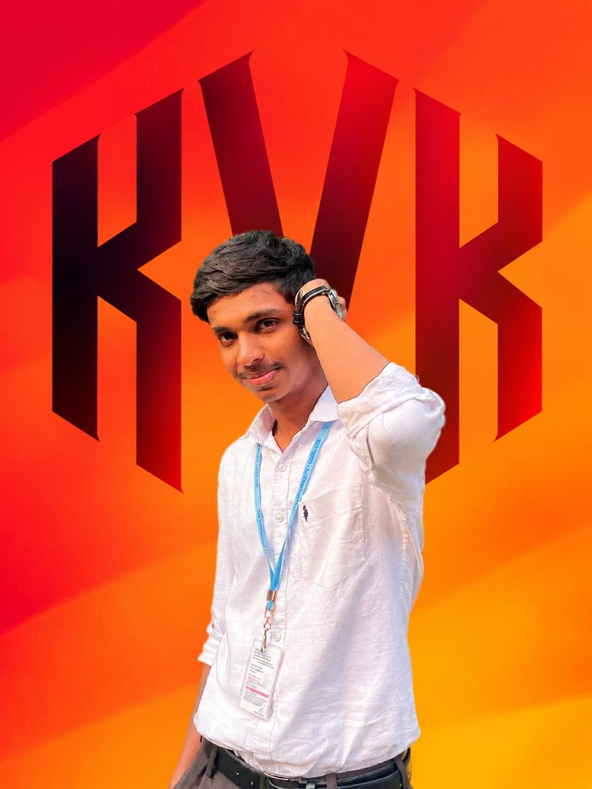
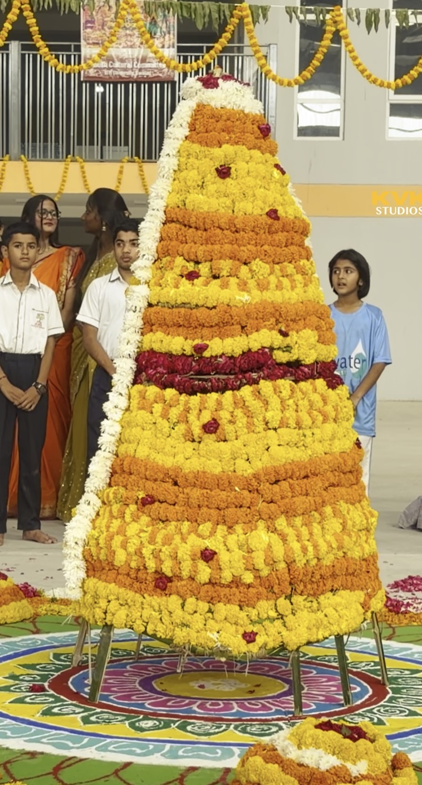
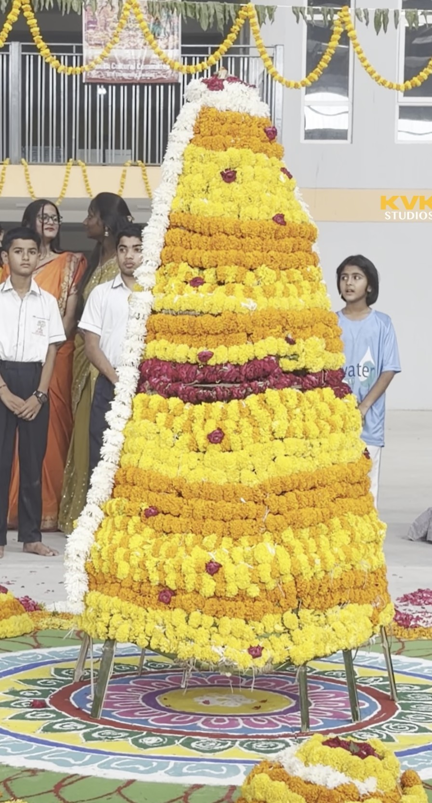

KVK Studios · Video Editing & Visual Storytelling
Stories That Deserve to Be seen.
Thoughtful edits. Powerful visuals. I turn raw footage into stories that connect, captivate, and stay with you.
Every frame. Every cut. Every feeling.
- Reels & Shorts
- YouTube
- Cinematic edits
- Promo videos
- Color grading
The Portfolio
Selected Work.
Different formats. One focus: a story well told.
No projects in this category yet. Pick another filter.
Services
Everything between
raw footage and release.
assets/about.jpg

About
I cut for feeling first, then for rhythm.
Hello I am K.Rushyanthsai Co-founder of KVK Studios. KVK Studios is a video editing studio, experience of 2 years. We focus on emotions and stories that hold attention. Every project starts with one question: what should the viewer feel? Then the edit, sound and color are built to deliver exactly that.
- Story first
- Sound-aware cuts
- Color that fits the mood
Color Grading
Same footage.
Different feeling.
Drag the handle to compare the flat, ungraded shot with the final grade.
- Balanced exposure
- Shaped contrast
- Consistent skin tones

